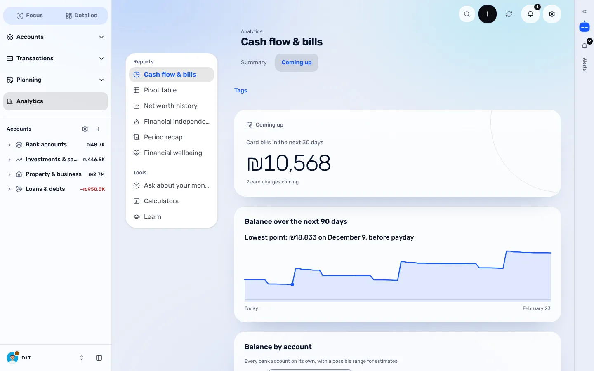
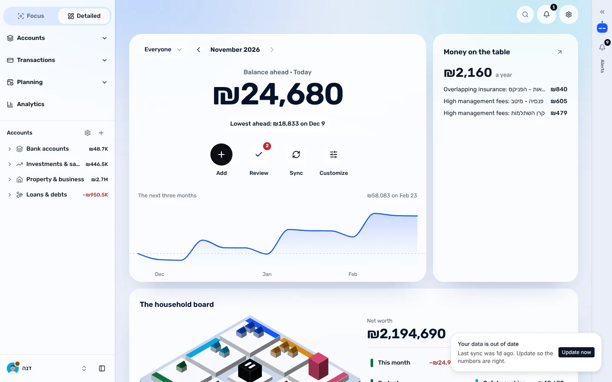

Free, no subscription
₪0 a month and ₪0 a year, with no paid tier. The subscription apps we checked run from ₪19 to ₪55 a month.
For Windows, Mac and Docker. Every way to install
Transactions are categorized by what you taught it and a dictionary of Israeli merchants. The rest is built on top: budgets, forecasts and the places you are losing money.
One list, grouped by week, in category colours, with search, splits and tags.

Every category has a budget, what's gone and what's left. Build one from your own average in one click.

A balance forecast for each account, and a calendar of the charges still coming this month and next.

A dashboard of tiles you can show or hide, and a calm Focus screen for when you only want the bottom line.

No signup, no account and no terminal.
One installer for Windows or Mac. Run it, and Penny is on your computer.
Banks and credit cards with automatic sync, or an Excel or CSV file. A short onboarding walks you through the first time.
Where the money went, what will be left at the end of the month and what is coming next, updated every day.
Penny is a program on your computer, not a service. It listens only on 127.0.0.1, blocks requests from other sites, and keeps everything in one file you can back up. Here is everything that ever goes out, and only because you turned it on.
A passphrase or PIN. While it's locked, the encryption key isn't kept on disk without it.
Every line is on GitHub under the MIT licence, with over 1,200 automated tests and signed updates.
Full export, automatic backup and restore, and a backup before every change to the database structure.
Create a private bot of your own in Telegram, paste its token into Settings and press Start. It answers only your chat, and it talks to the Penny on your computer, not to a server of ours.
Sunday, Tuesday and Thursday mornings: what's free to spend, this month's spending and the next card bills.
The biggest new expenses, each with what's left in its budget this month.
Upcoming bills and subscriptions, before they hit the account.
Categorize new transactions with one tap, or forward a card-charge SMS and save it.
When a connection starts failing, stays down, and when it's back.
Hide amounts in the chat, and the bot stays silent while the app is locked.
🗓️ Mid-month summary 🟢 ₪3,240 free until Dec 10, about ₪210 a day. This month's spending: ₪11,870 Next card bill: ₪6,412 on Dec 10
💳 New expense • ₪412 Shufersal 🟢 Food: ₪1,180 left this month
Charge of ₪86.00 at Aroma, card ending 4321
The bot writes in Hebrew; the chat above is translated.
Most money apps in Israel are cloud services on a monthly subscription. Penny is built differently.
₪0 a month and ₪0 a year, with no paid tier. The subscription apps we checked run from ₪19 to ₪55 a month.
Transactions, balances and passwords are stored on your own computer. In the other products we checked, they are stored with the company.
Every line is open to inspect on GitHub. None of the other products we checked is open source.
And what others do better: connecting to your bank through licensed open banking without a password, and a phone app that works when your computer is off.
The password stays on your computer only, encrypted with AES-256-GCM, and is sent only to your bank's own site during a sync. There is no Penny server it passes through. You can also turn on an app lock, and then the encryption key itself isn't stored on disk without your passphrase. The code is open, so anyone can check what it does.
Nowhere. The app runs on your computer, listens only on 127.0.0.1, and blocks requests from other sites. Data leaves only if you choose: to a cloud AI provider if you pick one (or none at all, with Ollama or no AI), and to Telegram if you connect a bot.
Set up the automatic encrypted backup to a folder Google Drive, OneDrive, Dropbox or iCloud syncs. The file opens only with your backup passphrase, and a restore brings everything back, including access to your accounts.
Nothing. Penny is open source under the MIT license: no subscription, no ads and no paid tier. Cloud AI, if you choose it, costs a fraction of a shekel per sync, paid directly to the provider.
Automatic sync works with 18 Israeli banks and card companies, plus open banking. Pension and investment balances sync from Altshuler Shaham, Phoenix, Excellence Trade, Clal, Harel, Meitav, Menora and Migdal. Anything else comes in from a CSV or Excel file, or by pasting a table.
It sends a summary on Sunday, Tuesday and Thursday mornings, tells you about new expenses after each sync with what's left in their budget, reminds you before charges and warns when a bank stops syncing. You can ask for a snapshot, sort transactions, save a forwarded card-charge SMS or start a sync. It answers only your own chat.
Scraping a bank's website may break the bank's terms of service. Penny is for personal use with your own accounts, on your own computer. Don't run it as a service for others.
Not in the app stores, but you can open Penny from your phone on your home network (turned on explicitly, behind the app lock) and install it to the home screen. Away from home, the Telegram bot keeps you up to date.
No. On Windows and Mac you download an installer and run it, no terminal. On Windows the app also updates itself.
Penny exists thanks to everyone who gave it code, fixes and ideas. Thank you to each of them.
The online version is the full app, running in your browser, with a year of made-up transactions, budgets, pension and goals. No signup, and nothing reaches a bank, an AI provider or Telegram.
 Sergey-Bar286 contributions
Sergey-Bar286 contributions claude27 contributions
claude27 contributions IsraelShok3 contributions
IsraelShok3 contributions Joelvdb3 contributions
Joelvdb3 contributions